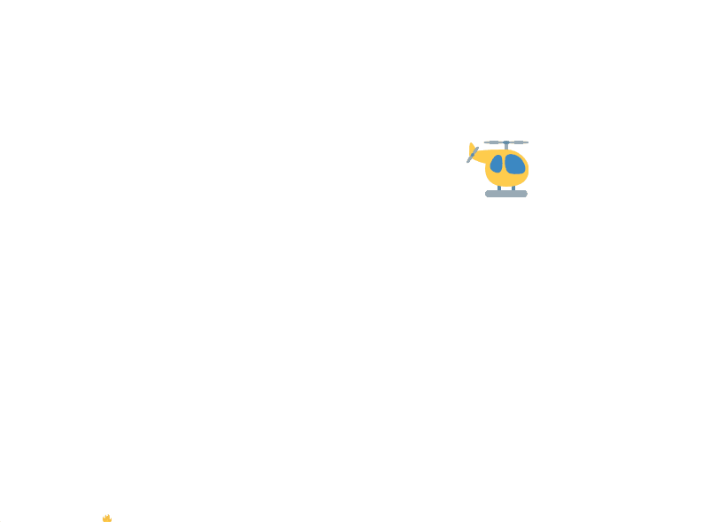
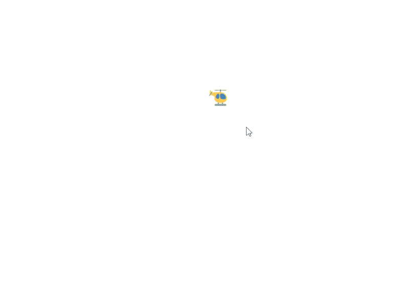

Fire Fighter Game¶
It’s finally time to make a more sophisticated game. The player will control a helicopter that flies back and forth dropping water drops on fires. The fires will slowly grow.
{kind=link}
Let’s start by creating the world, empty of any objects.
from dataclasses import dataclass
from designer import *
@dataclass
class World:
pass
def create_world() -> World:
""" Create the world """
return World()
when('starting', create_world)
start()
This world has no state inside of it, it’s just empty. We’re going to need to fill it up with the copter, the water drops, and the fires. But we’ll also fill it up with a few other things, like the score and the text.
Create the Copter¶
Let’s start by creating the copter.
The copter is a DesignerObject, specifically an emoji (although you could change it to be an image to have your own custom image).
Therefore, we can adjust its attributes once we’ve created a new instance.
def create_copter() -> DesignerObject:
""" Create the copter """
copter = emoji("helicopter")
copter.y = get_height() * (1 / 3)
copter.flip_x = True
return copter
We now modify our World definition to specify that the ‘copter’ key has a DesignerObject as its value.
@dataclass
class World:
copter: DesignerObject
def create_world() -> World:
""" Create the world """
return World(___)
Task 1: Fill in the blank above to use the function we defined before (create_copter) to make a copter and assign it to the field.
The Copter Flies¶
The copter is supposed to move left and right across the screen. Let’s start with having the copter just move right. Notice that we are using a global constant (all capital letters) instead of using a specific value like 1 or 4. That’s because we want other coders to immediately understand what the value means - it’s the speed of the copter. This also makes it easier to adjust the speed later on.
# NOTE: Place these lines at the beginning, right after imports
# Set speed of the copter
COPTER_SPEED = 5
# NOTE: Place this after your create_copter definition
def move_copter(world: World):
""" Move the copter horizontally"""
world.copter.x += COPTER_SPEED
# NOTE: Place this at the bottom, before start()
when("updating", move_copter)
You might be wondering why the move_copter function does not have a loop.
That’s because Designer automatically calls the move_copter function every time the game is updated.
Remember, the game is updated 30 times per second.
That means that a speed of 4 will make the copter move 120 pixels in a single second.
Since the window is 800 pixels wide (by default), it will take about 6 seconds for the copter to fly all the way across the screen.
Changing the speed will make the copter take more or less time.
Task 3: Copy these lines into your program in the appropriate places.
Fill in the COPTER_SPEED with an appropriate value.
Delete the lines that begin with NOTE:.
Try running your game, and confirm that the copter flies all the way across the screen.
{kind=link}
Bouncing the Copter¶
When the copter hits the right side of the window, then the copter should flip its direction and head left instead.
What does it mean for the copter to “hit the right side of the window”?
Basically, when its x position is more than the width of the window (which can be determined with get_width()).
When that happens, we need to start decreasing the copter’s x position from then on, instead of increasing it.
Similarly, when the copter hits the left side (aka its X position becomes 0 or less), then we need to make sure that we are increasing the copter’s x position from then on, instead of decreasing it.
Previously, we defined the move_copter function to just increment the copter’s x position by COPTER_SPEED amount.
But that won’t work, since we need to actually be changing the x position based on a variable amount (either COPTER_SPEED or -COPTER_SPEED), with that variable changing whenever we “hit” one of the two walls.
In order to have this variable amount, we must introduce a new field into our World definition.
That way, the current direction can be remembered between calls to move_copter.
@dataclass
class World:
copter: DesignerObject
copter_speed: int
Updating the World definition requires us to update any constructor calls, like the one in create_world:
def create_world() -> World:
""" Create the world """
return World(create_copter(), COPTER_SPEED)
Now we have a new integer field named copter_speed that will be either COPTER_SPEED or -COPTER_SPEED.
We need to modify move_copter to use this field’s value instead of the global constant.
def move_copter(world: World):
""" Move the copter horizontally"""
world.copter.x += ___
Task 4: Copy this code into your file after the create_copter function.
Then, fill in the blank with the appropriate expression.
Do not put COPTER_SPEED in the blank - use the new field in world that we just defined!
Make sure you’ve updated your World and create_world as described above.
With move_copter now depending on the copter_speed field, we are finally prepared to write bounce_copter.
This function is tricky, since it will need to check the current x position of the copter.
If the
xposition indicates we are past the right edge of the window, then we need to set thecopter_speedto be-COPTER_SPEED.If the
xposition indicates we are past the left edge of the window, then we need to set thecopter_speedto beCOPTER_SPEED.Otherwise, we don’t have to do anything different. We leave everything as it is. You don’t need an
elsecase!
def bounce_copter(world: World):
""" Handle the copter bouncing off a wall """
if world.copter.x > get_width():
world.copter_speed = ___
elif world.copter.x < 0:
___ = ___
when("updating", bounce_copter)
Task 5: Copy the code above, and then fill in the blanks as needed.
If you run the game now, the copter SHOULD bounce back and forth between the two sides of the screen. However, it will look a little funny since it is not mirroring the image. The copter appears to be flying backwards!
Flip the Copter¶
Any Designer Object can be flipped using its flip_x attribute, which is a boolean value.
If the value is False, then the image is drawn normally;
else if the value is True, then the image is drawn mirrored.
When we hit the right hand wall, we want to flip the copter’s image horizontally.
When we hit the left hand wall, we want to make the copter’s image not be flipped anymore.
In theory, we could add this code directly to the bounce_copter function that we had before.
At the same time we set the copter_speed`, we update the ``flip_x too.
However, this means we’re doing a lot of work in the body of those if statements.
Let’s avoid that by introducing some nice helper functions that will adjust the copter’s speed and horizontal flip in one action.
def head_left(world: World):
""" Make the copter start moving left """
world.copter_speed = -COPTER_SPEED
world.copter.flip_x = False
Task 6: Copy the code above, and then define the head_right function in the same way.
Once we have both the head_right and the head_left functions, we can use them in our bounce_copter function from before.
def bounce_copter(world: World):
""" Handle the copter bouncing off a wall """
if world.copter.x > get_width():
head_left(world)
elif world.copter.x < 0:
head_right(world)
Task 7: Copy this code and try running the game - you should see the copter correctly flips when it bounces off the walls.
Control the Copter¶
Games require interaction, in order to be games.
The player must make choices by using the keyboard and mouse.
In our game, the player should be able to use the left and right keys on the keyboard to make the copter change its direction any time.
We can use the 'typing' event to achieve this.
A handler for the 'typing' event takes in a key parameter, which is a string representing the keyboard key that was typed.
In this case, we want to respond to the 'left' and 'right' keys.
When they are pressed, we change the copter to start heading left or right, respectively.
def flip_copter(world: World, key: str):
""" Change the direction that the copter is moving """
if key == "left":
___
elif key == "right":
___
when("___", flip_copter)
Task 8: When you copy the code above, make sure that you put the when handler down at the bottom of the file, after all of the other event handlers but before you call start.
Then, fill in the missing lines of code with the appropriate function calls.
Create Water Drops¶
Next, our copter needs the ability to drop water. These water drops will fall down the screen, until they reach the bottom (when they will be removed from the game).
Let’s start by adding space in our World for water drops.
We can have any number of water drops, and initially there are none.
@dataclass
class World:
copter: DesignerObject
copter_speed: int
drops: list[DesignerObject]
def create_world() -> World:
""" Create the world """
return World(create_copter(), COPTER_SPEED, [])
Task 9: Modify your World and create_world definitions according to the code above.
Now we need to create a function that will create a new water drop. We could make the water drops an emoji like “”, but instead we’ll simply make them a small blue circle instead.
def create_water_drop() -> DesignerObject:
""" Create a water drop"""
return circle("blue", ___)
Task 10: Copy the code above, and then fill in the blank with an appropriate value. Refer to the documentation for circle to see what that second parameter represents.
We have not yet used the create_water_drop anywhere, so we can’t run our code to see what they look like.
Let’s fix that!
Drop Water¶
Water drops appear below the copter whenever you press the space key.
We’ll need to bind a new function to the 'typing' event.
In this function drop_water, whenever the key pressed is equal to 'space', we create a new water drop and append it to our world’s list of drops.
def drop_water(world: World, key: str):
""" Create a water drop when the space bar is pressed """
if key == 'space':
new_drop = create_water_drop()
world.___.append(___)
when("___", flip_copter)
Task 11: Copy the code above, and then fill in the blank with an appropriate value.
Put the when('typing', drop_water) handler next to the other when('typing', ...) handler already in your program.
Water drops will now appear when you press space, but they are not in the right location. Once we create the water drops, we need to move them to an appropriate starting location: directly below the middle of the copter. We can define a helper function that will take in two ``DesignerObject``s, and change the X/Y coordinates of the first object to be directly below the second one.
def move_below(bottom: DesignerObject, top: DesignerObject):
""" Move the bottom object to be below the top object """
bottom.y = ___.y + ___.height/2
bottom.x = ___.x
Task 12: Fill in the blanks with the appropriate variables (either top or bottom) to calculate the new position for the bottom.
Pay close attention to which variable goes in which blank!
With our helper function move_below in hand, we are now prepared to create the water drop, move it below the copter, and then add it our list of ‘drops’.
Let’s modify the drop_water function accordingly.
def drop_water(world: World, key: str):
""" Drop water from directly below the copter when space is pressed. """
if key == 'space':
new_drop = create_water_drop()
move_below(___, world.___)
world.___.append(___)
Task 13: Fill in the blanks with the appropriate code to move the newly created water drop to be below the world’s copter.
Falling Water¶
Water drops fall down the window every update, by increasing their y position.
Keep in mind, however, that there is potentially more than one water drop in the world.
Therefore, we need to rely on a for loop to iterate through all the water drops and increase the y value of each one.
Technically, the water drops should not fall at a constant speed - real objects accelerate as they fall down. For now, we’ll let our water drops fall at a constant speed since that is simpler to code.
def make_water_fall(world: World):
""" Move all the water drops down """
for ___ in ___:
drop.y += WATER_DROP_SPEED
when("updating", make_water_fall)
Task 14: Fill in the blanks with the needed code to move each drop down by the WATER_DROP_SPEED amount.
As always, make sure the when handler is at the bottom of your file, with the other updating handlers.
Run your game and confirm that drops are falling down from where ever the copter currently is. If you run your game for a while pressing the ‘space’ key, you may eventually encounter some lag since the water drops are not actually being removed from the game even when they are offscreen.
Destroy the Waters¶
The last phase of our water drops is the most complicated.
When a water drops reaches the bottom of the window, we need to remove (or filter) the water from the list and call the destroy function on the water.
Recall that the Filter Pattern has us create a new list based on an old list, choosing to keep only the elements from the old list that satisfy some condition.
In this case, our condition is that a given water drop should be kept in the list only if it is not below the bottom of the window.
The “bottom of the window” is really “a Y position that is greater than the height of the window” - the height of the window is given by get_height().
So we filter the list, comparing each drop’s y position with the height of the window, and keeping the ones where the drop’s y is less than the height.
The destroy function is necessary to properly remove the water object from the game.
It’s not enough to only remove the water from the World or to only destroy the water.
We must destroy AND remove the water from the World.
That way, Designer will not keep trying to draw it and our other code will not try to interact with destroyed waters.
def destroy_waters_on_landing(world: World):
""" Destroy any water drops that have landed on the ground """
kept = []
for drop in world.drops:
if ___:
___.append(___)
else:
destroy(___)
world.drops = kept
when("updating", destroy_waters_on_landing)
Task 15: Fill in the blanks with the needed code to keep the water drops with a Y position less than the height of the window.
If all goes well, water drops should now be removed when they are off screen. This can be hard to confirm, so you might try having them be removed a few pixels prior to being at the bottom of the window.
Creating the Fires¶
A key aspect of our game is the fires growing up slowly from the bottom. These fires determine when the game end, and their growth is inevitable.
The definition of our fires will be just like our definition of the water drops. They are a list which is initially empty. The main difference is that fires will appear randomly and grow slowly over time, instead of appearing when the user types a key. But they still start as an empty list.
@dataclass
class World:
copter: DesignerObject
copter_speed: int
drops: list[DesignerObject]
fires: list[DesignerObject]
def create_world() -> World:
""" Create the world """
return World(create_copter(), COPTER_SPEED, [], [])
Task 16: Modify your World and create_world definitions according to the code above.
Make sure you put the import statement at the top with the rest of the import statements.
We need a helper function to create fires.
The code below should help us get started.
Fires are an emoji that initially start off very small (using the scale) attribute.
We must also position the fire at the bottom of the screen, in a random x position between the left side of the window and the right side.
Notice how we use the anchor attribute to make the fire get drawn from its bottom center (as opposed to the actual center of the image) upward.
def create_fire() -> DesignerObject:
""" Create a small fire randomly on the screen """
fire = emoji('🔥')
fire.scale_x = .1
fire.scale_y = .1
fire.anchor = 'midbottom'
fire.x = randint(___, ___)
fire.y = get_height()
return fire
Task 17: Choose appropriate values to fill in for the blanks of random.randint(___, ___).
Place the create_fire function after the water related functions, before the when handlers.
Start Fires Randomly¶
Fires should appear randomly in the world.
However, there should be a limit on how many fires are present at any given time.
We can use the len function (which consumes a list and produces an integer representing its length) to calculate whether there are already enough fires.
We’ll use the randint function to control how often fires appear, based on some random chance.
When there are not too many fires and the random chance occurs, we create a new fire and append it to our list.
def make_fires(world: World):
""" Create a new fire at random times, if there aren't enough fires """
not_too_many_fires = len(___) < ___
random_chance = randint(___, ___) == ___
if not_too_many_fires and random_chance:
world.fires.append(create_fire())
when("updating", make_fires)
Task 18: Fill in the blanks so that there can only be 10 fires in the world, and a new fire has a 1 in 10 chance of spawning.
Be sure that you still have the from random import randint at the top of your file!
Grow Fires¶
Fires grow up during each update of the game, by a tiny amount.
This means their scale_x and scale_y attributes increase by a tiny float, like .01.
Similar to the water drops, we need to iterate through the fires, since we don’t know how many are in the list.
def grow_fires(world: World):
""" Make each fire get a little bit bigger """
for ___ in ___:
fire.scale_x += .01
fire.scale_y += .01
Task 19: Fill in the blanks with the appropriate values to iterate through the fires.
End Game on Big Fires¶
Fires grow to a certain size, and if they get to their full size then we lose the game.
We want our game to check every update whether there are any so-called “big fires” (where their scale_x is greater than or equal to 5, or some other large scale).
If so, we want to pause the game.
The pause function is a built-in Designer function that hangs the game, letting us see its final state until we close the window.
In order to check each fire, we can use the Boolean Accumulation Pattern to iterate through all the fires and ask a question for each one, combining it with the result so far about all previously checked fires.
Note that you do not need an if statement to implement this pattern!
We combine each boolean value using the or operator.
The there_are_big_fires function below uses this pattern to check whether there are any big fires in the world.
That function is then used as the event instead of the "updating" event - the pause function will be its handler.
def there_are_big_fires(world: World) -> bool:
""" Return True if there are any fires that are big """
any_big_fires_so_far = ___
for fire in world.fires:
any_big_fires_so_far = ___ or ___
return any_big_fires_so_far
when(there_are_big_fires, pause)
Task 20: Fill in the blanks with the expressions that will check all the fires, to see if they any of them are big (their scale_x is greater than or equal to 1).
Hint: to choose the initial value of any_big_fires_so_far, think about what this function should return when there are no fires.
Should the game pause?
Ending the Game¶
We’re getting very close to completing our game!
All we need now is the ability to destroy fires in order to increase our score.
The goal of the game is to put out as many fires as possible, while staying alive.
We’ll need to add a score and a counter to our World, so we can keep track of the score and also display it on the screen.
@dataclass
class World:
copter: DesignerObject
copter_speed: int
drops: list[DesignerObject]
fires: list[DesignerObject]
score: int
counter: DesignerObject
def create_world() -> World:
""" Create the world """
return World(create_copter(), COPTER_SPEED, [], [], 0,
text("black", ___, ___, ___))
Task 21: Choose values for the blanks that will make the text appear at the top-center of the screen in a large font.
Refer to the text documentation for guidance on the missing parameters.
Hint: Use the get_width() function to get the width of the screen.
Collide Waters and Fires¶
This last phase is by far the most difficult we have seen so far. We want to test if fires and waters are colliding. When any pair of fires and waters collide, we need to do the following:
Remove the fire and water from the game using the
destroyfunctionRemove the fire and water from the current state of the World
Increase the score by one.
But how do we know if any fires and waters are colliding with each other? The only way we can do so is to iterate through the pairs of drops and fires using a nested ``for`` loop. Read over the commented code below and seek help if you are not sure how it works. It’s a fairly complicated algorithm, but eventually produces two lists, one with the fires to be destroyed and one with the drops to be destroyed. From there, we use a helper function to remove the relevant fires and drops via a modification of the Filter Pattern.
def collide_water_fire(world: World):
destroyed_fires = []
destroyed_drops = []
# Compare every drop to every fire
for drop in world.drops:
for fire in world.fires:
# Check if there are any collisions between each pair
if colliding(drop, fire):
# Remember to remove this drop and fire
destroyed_drops.append(drop)
destroyed_fires.append(fire)
# And increase our score accordingly
world.score += 1
# Remove any fires/drops that were identified as colliding
world.drops = filter_from(world.drops, destroyed_drops)
world.fires = filter_from(world.fires, destroyed_fires)
def filter_from(old_list: list[DesignerObject], elements_to_not_keep: list[DesignerObject]) -> list[DesignerObject]:
new_values = ___
for item in old_list:
if ___ in ___:
destroy(___)
else:
___.append(___)
return new_values
when('updating', collide_water_fire)
Task 22: Fill in the missing blanks of the helper function filter_from.
Remember, we want to only include the items that are not in the elements_to_not_keep list that we are given!
This ends up being a fairly normal version of the Filter Pattern once you realize what the condition should be.
Show the Points¶
As the player destroys fires, their score increases. But how would we know that their score increases, unless we show the score?
def update_score(world):
""" Update the score """
world.counter.text = "Score: " + str(___)
when("updating", update_score)
Task 23: Fill in the blank with the world’s score.
Game Over Screen¶
We are just about done the game.
The only thing left to do is to make a Game Over screen when the fires grow too large.
In Designer, when you pause the game, it renders everything one last time.
Therefore, we want to change the text one last time before we pause to show the score.
It turns out that we can pass multiple functions in to the when function (even when it has a custom event function) to have them happen in a particular sequence.
def flash_game_over(world):
""" Show the game over message """
___ = "GAME OVER! Your score was " + str(___)
when(there_are_big_fires, flash_game_over, pause)
Task 24: Fill in the blanks to make the text say “Game Over” and show the score.
Extra Challenges¶
We have a number of extra challenges below. If you decide to tackle one of them, clearly indicate what you did at the top of your file for submission.
Make the fires increase their growing speed based on your score, so that the game gets harder over time.
Prevent fires from appearing partially off screen by adjusting the random X position.
Set a background with the background_image function
Have the fires dissolve when they hit the water drops, instead of disappearing instantly.
The water drops should have gravity when they fall (accelerate). You’ll need to add a new field to the water drops to keep track of their velocity.
Have the water drops splash when they hit the ground, creating a little animation.
Prevent the copter from dropping more than 3 water drops at a time.
Make the probability that a new fire appears be based on the number of fires already in the world.
Modify the game over screen to be a more dramatic scene; perhaps the copter could come crashing down, or just fly away unharmed. Or you could have another copter come in and save your copter. Feel free to make a happy ending :)